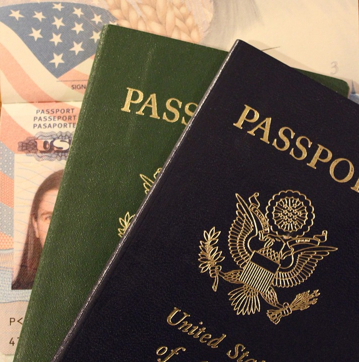
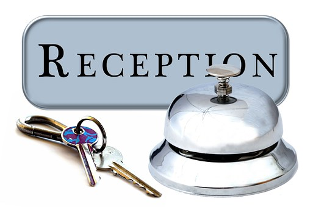

Come prepararsi per un viaggio...
Preparare i documenti necessari
- Carta d'identità
- Passaporto

Imparare qualche espressoine del posto
Imparare qualche frase/slogan principale del posto in cui si deve visitare serve per viaggiare più sicuri. Ci siono molti metodi per imparare frasi standar di un determinato posto, il più semplice è quello di iniziare qualche giorno prima del viaggio un corso in cui imparare ciò.
Scegliere un piano telefonico
Prima di partire,per evitare di rimanere senza piano tariffario,è necessario chiamare il proprio operatore, o recarsi al negozio del proprio gestore telefonico per attivare piani di roaming internazionali. Per far sì che questo funzoini,è necessario seguire i seguenti passaggi:
- Vai su Impostazioni> Connessioni Wireless e reti> Altro…> Reti mobili e controlla se è selezionata la casella Roaming dei dati. Deselezionala se non vuoi utilizzare il roaming e viceversa.
Portare lo stretto necessario
Spesso ci capita di tornare da un viaggio e accorgerci di non aver utilizzato un capo d'abbigliamento,allora,perchè portare tanti vestiti e riempire spazio inutilmente?
Un trucchetto per non portare troppa roba è quello di lavare i propri capi o indumenti durante il viaggio, inoltre se sei un lettore accanito potrai sempre scaricare il tuo libro in edizione digitale invece di portare quella cartacea.
Informazioni sulla residenza
La prima cosa da valutare quando si cerca un immobile su internet è proprio l’annuncio. Se si ha il sospetto che la foto messa a corredo dell’abitazione possa essere falsa, basta effettuare una semplice verifica: copiando l’immagine sul motore di ricerca Google, è possibile constatare se la stessa è stata pescata in rete e appartiene a un altro sito internet.
Definire il budget disponibile
Se si ha un budget limitato e si vuole risparmiare devi seguire questi punti:
Viaggia solo in posti economici e non in quelli dove non puoi permetterti.
Tendi a selezionare destinazioni che rientrino neltuo budget, come il Sud-Est Asiatico, alcuni paesi del Sud America e dell’Africa.Non pensare di star visitando dei luoghi "brutti"perchè viaggiare significa anche scoprire tutto il mondo in sè senza sui pregiudizi standard che ognuno di noi ha.
- Non comprare souvenir inutili
- Escludi i posti troppo turistici e frequentati
- Usa il mezzo più economico per spostarti